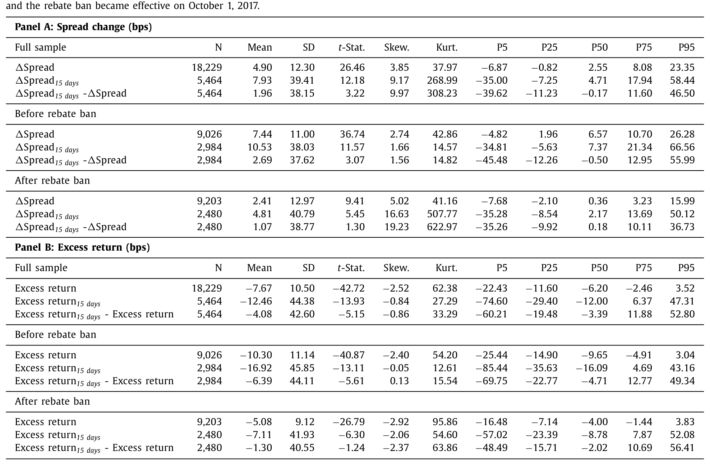
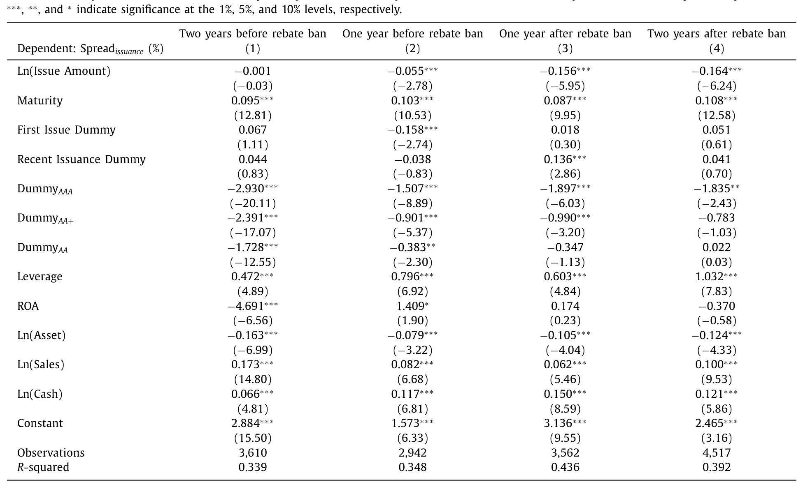
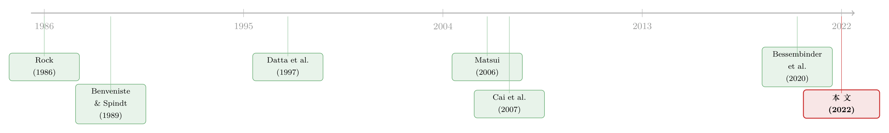

在中国发债，为什么「卖贵了」反而排着长队？
本文读的是 Ding, Xiong & Zhang (2022, Journal of Financial Economics)：在中国银行间市场，公司债的发行价格系统性地偏高——新券在二级市场首日的利差，平均比发行时高出 4.9 个基点。这与西方世界普遍存在的「发行抑价」恰好相反。作者把这一反常现象，归因于承销商为争夺发行人未来的承销生意，通过返费与自购两条暗线，把价格一路抬高。
1 一个反过来的谜题
先讲一件几乎所有金融学教科书都会告诉你的事：新股、新债，发行的时候往往会「打个折」。
这就是著名的发行抑价 (issuance underpricing)。承销商把发行价定得略低于二级市场即将出现的价格，于是上市首日股价（或债价）跳涨，认购到的投资者赚一笔。关于股票 IPO 抑价，文献已经汗牛充栋（综述见 Lowry, Michaely & Volkova, 2017）；公司债这边虽然证据稍弱，但在发达经济体里，主流发现也是抑价。一句话：发行人似乎总在「把钱留在桌上」。
可这篇论文把镜子翻了过来。
作者收集了 2015–2019 年中国银行间市场上 18,229 只、由 2,558 家非金融企业发行的债务融资工具，初次发行与续发都包括在内。他们做了一件很朴素的事：把每只债券发行当天的利差，和它在二级市场首笔成交那一天的利差放在一起比（利差都是相对于同期限国债算的）。
结果是：二级市场首日的利差，平均比发行时高出 4.9 个基点。
利差更高，意味着收益率更高、价格更低。换句话说，这些债券在发行的那一刻，价格被定得太贵了——上市后立刻回落。这不是抑价，而是发行超额定价 (issuance overpricing)。
$$ \textit{Overpricing} = s_{\text{sec}} - s_{\text{iss}} $$
这里 \(s_{\text{iss}}\) 是发行利差，\(s_{\text{sec}}\) 是二级市场首日利差，二者之差为正，就是「卖贵了」。而且这个正号极其顽固：无论按信用评级、期限、发行人规模、是否国企、还是按承销商类型去切分子样本，超额定价都稳稳地存在。

Table 2
于是一个自然的问题冒了出来：谁会愿意把东西卖贵？又是谁心甘情愿地买贵？
2 先看清这张牌桌：单一价格拍卖里，银行既是裁判又是球员
要理解这个谜题，得先看清中国银行间市场和美国市场的根本差别。
美国的公司债发行走的是簿记建档 (book-building)：承销团 (syndicate) 把债券在投资者之间分配，并且为了诱导投资者真实报出需求，通常把发行价定得略低于二级市场预期价（这就是抑价的来源）；更关键的是，一旦需求不及预期，承销团有义务在二级市场上托价（Bessembinder et al., 2020 对此有细致刻画）。
中国银行间市场则是另一套逻辑。发行采用单一价格拍卖 (single-price auction)：发行人雇一两家承销商，承销商不负责「分配」债券，而是组织拍卖、招揽投资者，并且——这一点至关重要——自己也下场竞标，为自有投资账户或不具备直接入场资格的客户买入。所有中标者按同一个清算价付款。承销商没有义务在二级市场托价。
而牌桌上坐着的，主要是银行。中国的债券市场是从银行体系里直接长出来的：作为改革前就存在的金融机构，银行握着全国大部分储蓄，自然成了债券的主要投资者，同时又是主要承销商。据上海清算所的数据，银行直接或间接持有了超过 50% 的非金融债券。
把这两件事叠在一起，怪味就出来了：在这个市场里，银行既是组织拍卖的「裁判」，又是亲自竞标的「球员」。一个能既当裁判又当球员的人，定价行为自然会和教科书不一样。
还要补一笔背景。这个市场的债券期限极短——样本里平均只有 1.74 年，绝大多数是商业票据和中期票据（二者占发行量的 86% 以上）。期限短，意味着同一家企业要反复地、一茬接一茬地发债。这个看似不起眼的制度细节，正是后面整个故事的发动机。
（关于中国债券市场里那层「隐性担保」的底色，可参见《「刚兑」是原罪，还是次优解？——重读中国影子银行里的隐性担保》。）
3 真正关键的一步：为什么承销商要把价格抬高？
接着，一个更尖锐的问题是：超额定价对谁有利、对谁有害？
把账算清楚就明白了。发行价偏高 = 收益率偏低 = 发行人的融资成本更低。所以超额定价其实是对发行人有利的。那谁吃了亏？是按高价买入债券的投资者——而我们刚说过，承销商自己往往就是买家之一。也就是说，承销商在用某种方式，把好处送给了发行人。
为什么要送？
这里是全文的枢纽。由于债券期限短、发行人要反复发债，这一次的发行价，会成为下一次发债、乃至向银行借款时一个公开可见的定价基准 (benchmark)。二级市场极度不流动，价格反而容易被操纵、不那么可靠；而发行价不仅相对可靠，还会定期公之于众。于是，一个更高的发行价，对发行人来说是双重的好处：既压低了本次融资成本，又为它所有其它债务融资立起了一个「我很优质、利率应该很低」的公开标杆。
而发行人会拿什么来回报这份好处？——把未来的承销生意留给现在这家承销商。
这就把承销商的激励彻底掉了个个儿。在美国，承销商可能用「抑价」当作给投资者未来生意的酬谢（quid pro quo，见 Reuter, 2006；Nimalendran et al., 2007；Liu & Ritter, 2010；Goldstein et al., 2011）。而在中国的制度环境下，承销商讨好的对象不是投资者，而是发行人；讨好的手段，则从抑价反转成了超额定价。
作者在数据里给这条逻辑找到了直接证据：更低的发行利差（即更高的定价），能预测发行人在下一次发债时留用现承销商的更高概率。 承销商先亏本拉客、再靠后续生意把账赚回来——这套「赔本赚吆喝」的关系型逻辑，和银行信贷里的关系借贷如出一辙（可对照《银行为什么舍得先亏本拉客？——把「关系」算进一国信贷的总账》）。
4 然后，一场天上掉下来的自然实验
光有「激励」还不够，还得有「手段」。承销商怎么把价格抬上去？
最直接的一招叫返费 (rebate)：承销商私下给参与拍卖的机构返一笔钱，吸引它们来高价认购。由于返费无需向公众披露，它实际上成了一种价格歧视工具，悄悄腐蚀着发行过程的透明度。银行间市场的监管者——中国银行间市场交易商协会（NAFMII）——对返费的泛滥忧心忡忡，于是在 2017 年 10 月 1 日出台新规，禁止承销商使用返费。
于是反转出现了：这恰好是一场为研究者量身定做的自然实验。
如果返费真是抬高定价的关键手段，那么禁令一下，超额定价就该应声回落。数据完全配合：平均超额定价从禁令前的 7.44 个基点，掉到了禁令后的 2.41 个基点。
更妙的是，作者没有止步于这个「前后对比」，而是顺势做了一个双重差分 (difference-in-differences, DiD)——核心思路是：返费动机越强的承销商/发行人，禁令之后超额定价下降得应该越多。
- 中央国企 (central SOE) 通常是享受中央政府隐性担保的巨无霸，是最「值钱」的发行人，承销商为争夺它们的生意竞争最激烈、返费用得最凶。果然，禁令之后，中央国企发行债券的超额定价下降幅度，显著大于其它发行人。
- 反过来，「四大行」（工、农、中、建）是市场上最大的承销商，它们面对的竞争更小、用返费拉生意的动机更弱。于是，由四大行承销的债券，禁令后超额定价的降幅显著更小。
一增一减，两个方向的 DiD 都指向同一个故事：承销商的竞争激励，以及返费这个工具，正是制造超额定价的重要机制。
5 第二条暗线：承销商的「自购」，是在赔本
可故事还没完。即便返费被禁，超额定价依然显著为正（只是缩小了）。一定还有别的力量在维持着它。
线索藏在一个数字里：承销商平均会把它所承销债券的 35% 自己买下来（为自有账户或客户）。问题是——他们在什么样的发行里买得更多？
直觉上有两个「无害」的解释。其一，承销商低价捡漏，专挑被市场低估的券买进，好赚超额收益；其二，承销商在按基本面价值给发行托价，那应当赚取公允回报。这两种解释都预言：承销商应该在便宜的券里买得更多。
但数据给出的，是一个令人意外的相反模式：承销商恰恰在超额定价更高（也就是更贵）的发行里，买得更多。 越贵越买——这意味着他们在自购中主动承担了亏损。
两个「无害」假说就此被否决。剩下的解释只有一个：承销商在超额竞标 (overbidding)，用自掏腰包的方式把发行价硬生生顶上去。这是制造超额定价的第二条渠道，在返费被禁之后尤其关键。（承销商在一级市场上那些不为人知的小动作，另一例可见《把债券「超额配售」给你：承销商在悄悄做空什么？》。）
6 一个意外的「副产品」：价格变干净了
最后，作者给这场监管实验做了一次「疗效检验」。
逻辑是这样的：如果返费、超额竞标这些手段污染了发行价，那么发行价就会偏离基本面、变得「不讲道理」；反过来，禁令若真的净化了发行过程，那么禁令之后，可观测的基本面变量应该能解释发行价里更大的一部分变异。这套用「基本面解释力」给定价质量打分的做法，文献里早有先例（Collin-Dufresne, Goldstein & Martin, 2001；Bao, 2009 报告基本面能解释美国公司债信用利差高达 45% 的横截面变异；Geng & Pan, 2020 也用它来论证中国的国企溢价）。
作者把发行价对一组发行与发行人特征做回归，分别取禁令前两年、前一年与禁令后一年、后两年。如表 9 所示，回归 \(R^2\) 从禁令前的 0.339 和 0.348，上升到禁令后的 0.436 和 0.392。

Table 9
也就是说，返费禁令之后，不仅超额定价下降了，发行价中能被基本面解释的比例也明显提高了——价格变得更干净了。这为「返费在腐蚀定价质量」这一判断，补上了最后一块拼图。
7 文献脉络
把这篇论文放回它的坐标系里，会看得更清楚。
最早的那条线关心的是「新发证券为什么被定错价」。Rock (1986) 用赢家诅咒解释 IPO 抑价，Benveniste & Spindt (1989) 则把抑价说成承销商诱导投资者揭示需求的代价——这是「信息不对称」一脉。接着，研究者把目光从股票转向公司债：Datta, Iskandar-Datta & Patel (1997) 在 18 只投资级债券 IPO 的小样本里发现了温和的超额定价，并猜测可能源自承销商之间的过度竞争，但没能给出关于承销商激励或渠道的任何证据；Cai, Helwege & Warga (2007) 在 1995–1999 年 2975 只券里，对投资级债券没找到显著错价；Goldstein & Hotchkiss (2009) 则在投资级债券里看到首日 15 个基点的正超额收益。结论始终莫衷一是。

然后，一个有趣的「平行宇宙」出现了：Matsui (2006)、McKenzie & Takaoka (2008) 在日本直债市场里发现了超额定价。为什么是日本？因为它和中国共享一个关键特征——银行同时充当主要投资者和承销商。但日本那几篇只是初步记录了现象，没有挖掘机制。
这篇论文正落在这条裂缝上：它不仅在全世界第二大公司债市场里给出了超额定价的稳健证据，更重要的是，它把 Datta et al. (1997) 二十多年前那句没能证实的猜测——「也许是承销商竞争」——真正落了地，并用返费禁令这场自然实验，把承销商激励和返费 / 自购两条渠道清清楚楚地剥了出来。这是它相对于日本研究、也相对于整条文献的核心增量。
它同时也接进了「中国金融体系」这条快速生长的支流：Amstad & He (2020) 综述了银行间市场，Ang, Bai & Zhou (2017) 研究城投债定价，Chen, He & Liu (2020) 讨论地方政府融资，Song & Xiong (2018) 勾勒了整个体系的风险图景。本文与它们共享主题，但把焦点独独对准了发行定价。
8 评论与延伸（Q&A + 研究方向）
(a) 几个可能的疑问
Q：超额定价（overpricing）就是 IPO 抑价（underpricing）简单换个符号吗？
现象上是镜像，机制上却相反。抑价里承销商讨好的是投资者（诱导其揭示需求或作为未来生意的酬谢）；本文的超额定价里，承销商讨好的是发行人，因为短期限、反复发债使发行价成了发行人对外的公开定价基准。同一个「关系换生意」的逻辑，在不同制度下结出了符号相反的果实。
Q：二级市场那么不流动，用它的首日价格当基准，可信吗？
这正是作者论证里一个微妙之处。他们恰恰强调二级市场不流动、价格更易被操纵，所以发行价比二级价更可靠——这也是发行人愿意为高发行价买单的原因。但用于度量超额定价的，又偏偏是二级市场首日利差。两者并不矛盾：超额定价度量的是「发行价相对随后市场价高了多少」，只要首日成交价大体反映了真实需求，方向就成立；不过首日价的噪声，确实可能让
4.9个基点这个点估计带上不小的测量误差。
Q：返费禁令的 DiD 干净吗？会不会有同期其它冲击？
禁令本身是外生的政策时点，这是优势。DiD 的可信度更多来自它的横截面异质性——中央国企降幅更大、四大行降幅更小，两个方向都与「竞争激励」的事前预测吻合，很难用一个笼统的同期宏观冲击同时解释。真正的隐忧是平行趋势：中央国企与其它发行人在禁令前的超额定价趋势是否本就不同，以及 2017 年前后信用环境（违约潮、去杠杆）的变化是否对不同发行人差异化地起了作用。
Q：自购 35% 真的是在赔钱，而不是低价捡漏或合规托价？
作者的反驳很干净：若是捡漏或按基本面托价，承销商都该在便宜的券里买得多；而数据显示他们在越贵的券里买得越多。这一符号直接否掉了两个「无害」假说，剩下的解释就是超额竞标。当然，35% 里区分「自有账户」和「代客户买入」会更有说服力——代客持有未必是承销商自己承担损失。
Q：发行人「被卖贵」，难道不是好事吗？那受损的到底是谁？
对，这是本文最反直觉的一点：超额定价压低了发行人的融资成本，对发行人有利。真正掏钱的是高价买入的投资者——而由于银行同时是承销商和投资者，损失很大程度上由承销商自己（及其客户）通过自购与返费消化掉了，再用未来的承销费把账找回来。它本质是一场在银行体系内部完成的财富再分配。
Q：这对「隐性担保」「刚兑」的叙事意味着什么？
二者是互补的。隐性担保把违约风险压到极低，使逆向选择不再是问题，让银行敢于为关系而非为风险定价；超额定价则是在这块「无风险」的土壤上，承销商竞争开出的花。换句话说，正是隐性担保的存在，才让「赔本拉客、争夺关系」成为一种划算的策略。
(b) 几个可能的研究问题与提案
1. 外资进入后，超额定价会被「修正」吗？
【经济故事】债券通 (Bond Connect) 把不受关系网络约束、也不靠返费做生意的境外投资者引入了银行间市场。他们没有「讨好发行人换未来承销」的动机，理应是更挑剔的买家。若他们在某只券上的参与度更高，超额定价是否会更低？这等于给「关系驱动定价」找一个反向的安慰剂。 【可行性】中。需要 Bond Connect 逐券持有/成交数据（或托管机构层面的境外持仓），与本文的发行—二级利差度量合并。识别可用债券通分批开通、或个券是否纳入合格范围作为变异来源。难点是境外持仓数据的颗粒度与可得性。
2. 发行价真的外溢到了银行贷款定价吗？
【经济故事】本文的核心机制假设「发行价是发行人对外的公开基准」，但只间接验证了「高定价→留用承销商」。更直接的检验是：一家企业某次债券的（超额）定价，会不会压低它随后向银行借款的利率？若能验证这条外溢，机制就完整了。 【可行性】中。需把企业层面的债券发行数据与银行贷款定价（如银登中心、或上市公司披露的贷款合同）匹配。识别上可借返费禁令带来的发行价外生变化，看贷款利率是否随之调整。
3. 自购带来的信用风险，藏在谁的资产负债表上？
【经济故事】承销商靠自购顶高价格，等于把信用风险吞进自己（或客户）的表内。一旦违约潮真的来临，这些「为关系买单」的头寸会不会成为风险传染的暗渠？这把发行定价和金融稳定连了起来。 【可行性】低到中。需要承销商自持债券的明细及其后续违约/减值数据，机构内部「投行—自营防火墙」的合规边界又使数据高度敏感。可退一步用承销商类型 × 发行人违约事件做事件研究。
4. 当二级市场更不流动，超额定价会更大吗？
【经济故事】本文反复强调二级市场不流动是超额定价得以维系的土壤。那么把流动性作为横截面变量：越不流动的券，发行价越「无人对账」，超额定价是否越严重？这能把「流动性」从背景假设升格为可检验的预测。 【可行性】高。可用经典的高低价价差估计（Corwin & Schultz, 2012）或换手率构造个券流动性，直接与超额定价做横截面回归。数据基本都在本文样本之内，是一个相对 doable 的延伸。（关于公司债流动性的度量，可参见《把「成交价」从「成交量」里解放出来——重新丈量公司债的流动性》。）
最后说说我的判断。
贡献上，这篇论文做了一件「记录 + 解释」的完整工作：它在世界第二大公司债市场里稳稳钉下了一个与西方相反的事实——超额定价，并且没有停在描述层面，而是用一场制度性禁令把承销商竞争这条机制从猜测变成了证据。Datta et al. (1997) 二十多年前的那句空猜想，终于有人接住了。它对理解中国式金融制度——银行同时是裁判与球员、隐性担保托底、短期限逼出反复博弈——提供了一个极其具体的微观切片。
对识别的担忧主要有三处。其一，4.9 个基点本身很小，且依赖二级市场首日这个噪声不低的价格，点估计的稳健性值得多看几眼。其二，返费禁令的 DiD 虽有漂亮的横截面异质性背书，但 2017 年前后正撞上去杠杆与违约潮抬头，不同发行人受信用环境冲击的差异，未必能被现有固定效应完全吸收。其三，自购「越贵越买」的推断，依赖于把代客买入也算作承销商承担损失，这一步还可以更细。
后续最想看到的，是把这套故事推到它的两个自然边界：一端是外资——不吃关系这一套的境外投资者进来后，超额定价会不会被「校正」；另一端是贷款——发行价究竟有没有真的外溢成企业的借款基准。前者能检验机制的边界，后者能闭合机制的链条。对做信用市场、外资持有人与流动性的人来说，这篇论文留下的，是一张画得很清楚、却还远未走完的地图。
参考文献
- Amstad, M., He, Z. (2020). Chinese bond market and interbank market. In The Handbook of China's Financial System. Princeton University Press, pp. 105–147.
- Ang, A., Bai, J., Zhou, H. (2017). The great wall of debt: Real estate, corruption, and Chinese local government credit spreads. Working paper.
- Bao, J. (2009). Structural models of default and the cross-section of corporate bond yield spreads. Working paper, University of Delaware.
- Benveniste, L., Spindt, P. (1989). How investment bankers determine the offer price and allocation of new issues. Journal of Financial Economics 24, 343–361.
- Bessembinder, H., Jacobsen, S., Maxwell, W., Venkataraman, K. (2020). Syndicate structure, primary allocations, and secondary market outcomes in corporate bond offerings. Working paper.
- Cai, N., Helwege, J., Warga, A. (2007). Underpricing in the corporate bond market. Review of Financial Studies 20, 2021–2046.
- Chen, Z., He, Z., Liu, C. (2020). The financing of local government in China: Stimulus loan wanes and shadow banking waxes. Journal of Financial Economics 137, 42–71.
- Collin-Dufresne, P., Goldstein, R.S., Martin, J.S. (2001). The determinants of credit spread changes. Journal of Finance 56, 2177–2207.
- Datta, S., Iskandar-Datta, M., Patel, A. (1997). The pricing of initial public offers of corporate straight debt. Journal of Finance 52, 379–396.
- Geng, Z., Pan, J. (2020). The SOE premium and government support in China's credit market. Working paper.
- Goldstein, M., Hotchkiss, E. (2009). Dealer behavior and the trading of newly issued corporate bonds. AFA San Francisco Meetings Paper.
- Lowry, M., Michaely, R., Volkova, E. (2017). Initial public offerings: A synthesis of the literature and directions for future research. Foundations and Trends in Finance 11, 154–320.
- Matsui, K. (2006). Overpricing of new issues in the Japanese straight bond market. Applied Financial Economics Letters 2, 323–327.
- McKenzie, C., Takaoka, S. (2008). Mispricing in the Japanese corporate bond market. Working paper.
- Rock, K. (1986). Why new issues are underpriced. Journal of Financial Economics 15, 187–212.
- Song, Z., Xiong, W. (2018). Risks in China's financial system. Annual Review of Financial Economics 10, 261–286.